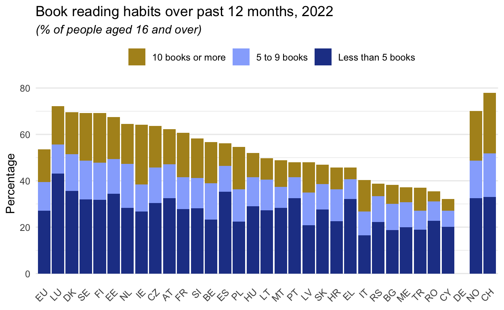
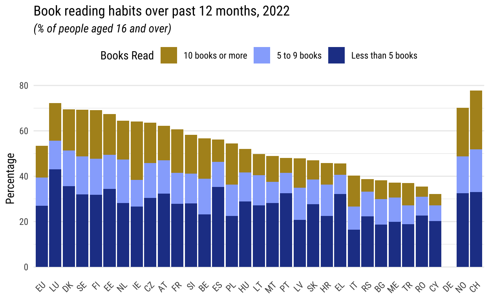
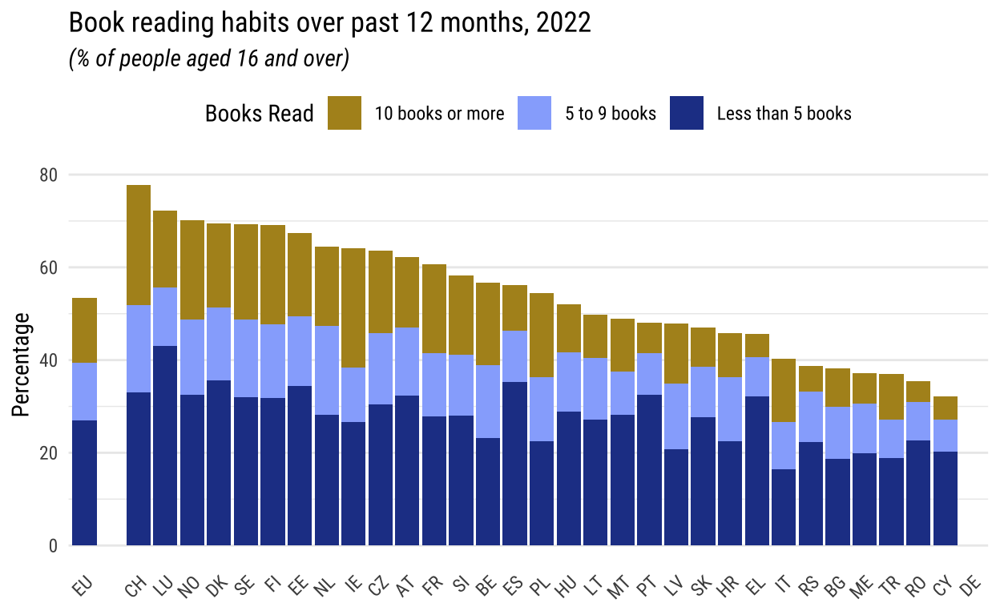
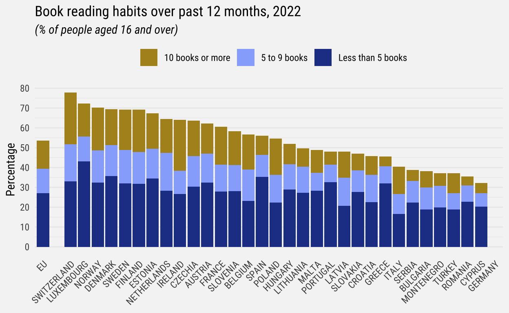
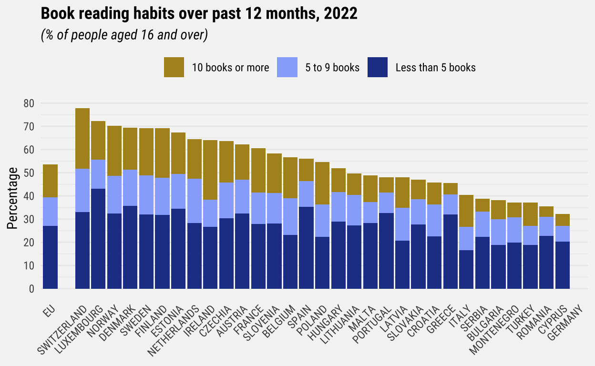
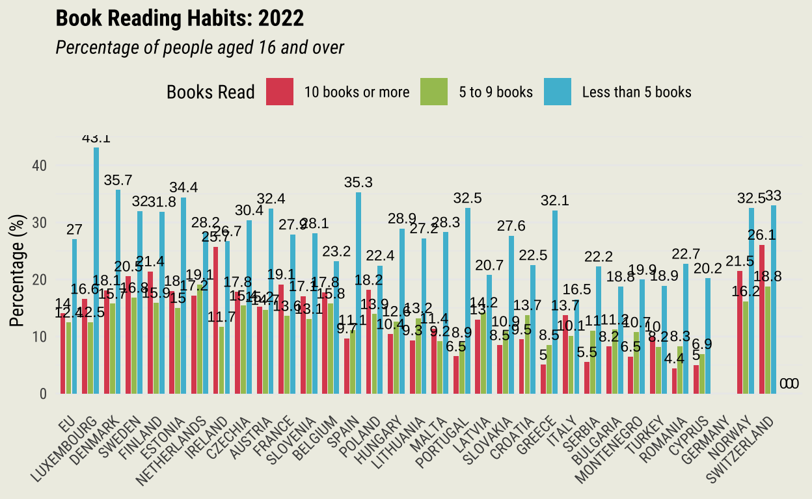
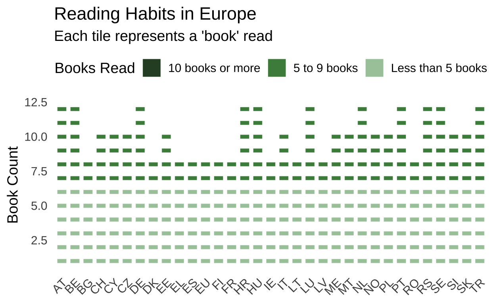

Introduction
In 2022, according to EU statistics on income and living conditions, 52.8% of the EU population aged 16 years or over reported reading books in the past 12 months.
The “Book Reading Habits over the Past 12 Months (2022)” graph, created by Eurostat, the statistical office of the European Union, provides an insightful look into reading habits across different EU countries and a few non-EU countries.
The data reflects not only cultural and educational trends in book readership but also highlights variations between countries, offering a window into broader societal behaviors. This information is valuable for understanding literacy levels, cultural engagement, and potential market demand in the publishing industry across Europe and its neighboring regions.
Necessary Libraries
The following libraries are used for the graph replication and the graph improvement.
Load the data
Load the dataset into the environment. Here, ilc_scp27_linear represents the dataset containing information on book reading habits.
data <- read.csv(file = "data/ilc_scp27_linear.csv")Data cleaning and transformation
Step 1: Filter Relevant Data
First, the data is cleaned by extracting only the relevant data for the year 2022 and selecting records where the unit is expressed in percentages. Thanks to the select( ) function, only the relevant columns geo (country), n_book (book categories), and OBS_VALUE (percentage) are kept.
The mutate() function ensures the n_book column is treated as a factor, which is necessary for ordering and labeling later.
Step 2: Convert and Recode Variables
Ensure the OBS_VALUE column is numeric for accurate aggregation and plotting.
# Convert OBS_VALUE to numeric
data_filtered$OBS_VALUE <- as.numeric(data_filtered$OBS_VALUE)The n_book variable, which categorizes the number of books read, is then re-coded with descriptive labels, simplifying the category for “0 books” to a blank space.
# Recode the 'n_book' column with more descriptive labels
data_filtered$n_book <- recode(data_filtered$n_book,
`0` = "0 books",
`LT5` = "Less than 5 books",
`5-9` = "5 to 9 books",
`GE10` = "10 books or more")Step 3: Reorder Categories and Remove Unnecessary Entries
I then reordered categories and remove unnecessary entries.
- Reorder levels for n_book: Define the order of book categories for consistent stacking in the plot. This ensures that “0 books” is at the bottom, and “10 books or more” is at the top.
- Replace and exclude specific entries: (a) replace EU27_2020 with the simplified label EU; (b) exclude the entry EA20 (Euro area) from the dataset; (c) remove the “0 books” category since it is not required for the final visualization.
#1 Reorder the levels of n_book factor
data_filtered$n_book <- factor(data_filtered$n_book,
levels = c("10 books or more", "5 to 9 books",
"Less than 5 books","0 books"))
#2 Replace EU_27_2020 with EU
data_filtered$geo <- recode(data_filtered$geo, "EU27_2020" = "EU")
#2 Remove the EA20 and 0 books category from the dataset
data_filtered <- data_filtered %>%
filter(geo != "EA20") %>%
filter(n_book != "0 books")Step 4: Aggregate Data
Then I aggregated the data to avoid duplicates and ensure data integrity. First, I grouped data by country (geo) and book category (n_book). Then calculated the mean percentage (OBS_VALUE) for each group. Finally, used na.rm = TRUE to handle missing values.
Step 5: Reshape Data for Visualization
To make it easier to create a stacked bar plot, I pivoted the data from long format (one row per country and book category) to wide format (one row per country with separate columns for each book category).
# Pivot data for visualization
plot_data <- data_aggregated %>%
pivot_wider(names_from = n_book, values_from = OBS_VALUE, values_fill = 0)Step 6: Reorder Countries
To ensure that EU appears first, followed by other countries in a decreasing order.
I tried to order the countries in decreasing order based on the sum of their percentages (OBS_VALUE), to do so I used mutate and arrange to reorder the factor levels for geo. Trying to ensures that countries are plotted in decreasing order of total percentages, with the desired stacking order maintained.
# Calculate total percentage (OBS_VALUE) for each country
geo_order <- data_aggregated %>%
group_by(geo) %>%
summarise(total_value = sum(OBS_VALUE, na.rm = TRUE)) %>%
ungroup() %>%
arrange(desc(total_value)) %>% # Order by total_value in descending order
pull(geo) # Extract the ordered list of countries
# # Reorder geo: EU first, then countries in decreasing order of total_value
# data_aggregated$geo <- factor(data_aggregated$geo,
# levels = c("EU", geo_order[geo_order != "EU"])) # Ensure EU is first
# Reorder geo: EU first, then countries in decreasing order, NO and CH last
geo_order_final <- c("EU", geo_order[!(geo_order %in% c("EU", "NO", "CH"))], "NO", "CH")
# Apply the new order to the geo factor
data_aggregated$geo <- factor(data_aggregated$geo, levels = geo_order_final)Step 7: Define Colours
Define consistent colours for each book category.
Create the Stacked Bar Plot
Key Features:
- aes(): Maps countries (geo) to the x-axis, percentages (OBS_VALUE) to the y-axis, and book categories (n_book) to the fill color.
- geom_bar(): Creates a stacked bar plot.
- scale_fill_manual(): Applies custom colors to each book category.
- labs(): Adds a title, subtitle, axis labels, and legend title.
- theme_minimal(): Uses a clean theme with minimal distractions.
- theme(): Customizes the text orientation, gridlines, and legend position.
# Create the stacked bar plot
ggplot(data_aggregated, aes(x = geo, y = OBS_VALUE, fill = n_book)) +
geom_bar(stat = "identity", position = "stack") +
scale_fill_manual(values = colors) +
labs(title = "Book reading habits over past 12 months, 2022",
subtitle = "(% of people aged 16 and over)",
x = NULL,
y = "Percentage",
fill = " ") +
theme_minimal() +
theme(axis.text.x = element_text(angle = 45, hjust = 1),
panel.grid.major.x = element_blank(),
legend.position = "top",
plot.subtitle = element_text(face = "italic"))
The resulting stacked bar plot shows the distribution of book reading habits across different countries in 2022, with “Less than 5 books” at the bottom, “5 to 9 books” in the middle, and “10 books or more” at the top. The EU is highlighted as the first entry, followed by other countries alphabetically. The graph uses descriptive labels, visually appealing colors, and clear annotations for easy interpretation.
Graph Refinement
Font
I had previously loaded the necessary libraries: sysfonts (which provides access to Google Fonts) and showtext (which ensures that non-standard fonts render correctly in plots).
The fonts used in the original graph were checked using an online font detector (What the font). However, the original font was unavailable and ‘Roboto Condensed’ was reported as the most similar free font. The font is found in Google fonts and is uploaded using the ‘sysfonts’ package.
I had to add and activate the Roboto Condensed font.
sysfonts::font_add_google("Roboto Condensed", family = "roboto_condensed")
showtext_auto() To ensure that the custom font is applied consistently when the code is rendered in a Quarto or R Markdown document, I had to configure chung options for Quarto/R Markdown: fig.showtext = TRUE: Ensures that showtext is used for rendering fonts in figures.
knitr::opts_chunk$set(echo = TRUE, fig.align = "center", fig.showtext = TRUE)Then, I applied the custom font in the ggplot theme:
ggplot(data_aggregated, aes(x = geo, y = OBS_VALUE, fill = n_book)) +
geom_bar(stat = "identity", position = "stack") +
scale_fill_manual(values = colors) +
labs(
title = "Book reading habits over past 12 months, 2022",
subtitle = "(% of people aged 16 and over)",
x = NULL,
y = "Percentage",
fill = "Books Read"
) +
theme_minimal(base_family = "roboto_condensed") +
theme(
axis.text.x = element_text(angle = 45, hjust = 1),
panel.grid.major.x = element_blank(),
legend.position = "top",
plot.subtitle = element_text(face = "italic")
)
The final plot uses the “Roboto Condensed” font across all text elements (title, subtitle, legend, axis labels, etc.), ensuring a clean and cohesive visual style. This is particularly useful for creating professional-quality visualizations that match specific branding or design requirements.
Space between countries
The original graph separates the EU average from the other countries, leaving the EU bar on the far left of the graph, and the other countries alphabetically ordered on the right.
To do so, I created a dummy level and explicitly added to ‘geo’ variable. The dummy space (geo = ” “) creates a visual gap between the bar for EU and the rest of the countries.Then, to ensure the ‘geo’ variable has the correct order for the bars in the graph, I have make explicit the levels:”EU” is placed first; ” ” (a dummy space) is added as a placeholder to create the gap; the remaining countries are sorted alphabetically and placed after the dummy space.
Then, I added add a blank row that represents the gap in the bar chart: a new row is created with geo = ” “, no book category (n_book = NA), and OBS_VALUE = 0 so it doesn’t affect the graph’s data.
And, since adding a dummy row can reset the factor levels, I explicitly reapplied the correct levels.
I then ensure the geo column in the updated dataset (data_aggregated_with_space) retains the correct order of levels, including the dummy space.
# Add a row for the dummy space with 0 values
dummy_row <- data.frame(geo = " ", n_book = NA, OBS_VALUE = 0)
data_aggregated_with_space <- bind_rows(data_aggregated, dummy_row)
# Ensure the dummy row is treated as part of the factor
data_aggregated_with_space$geo <- factor(data_aggregated_with_space$geo, levels = levels(data_aggregated$geo))Finally, we plot the stacked bar chart
# Plot with a gap between EU and the other countries
ggplot(data_aggregated_with_space, aes(x = geo, y = OBS_VALUE, fill = n_book)) +
geom_bar(stat = "identity", position = "stack") +
scale_fill_manual(values = colors, na.translate = FALSE) +
labs(title = "Book reading habits over past 12 months, 2022",
subtitle = "(% of people aged 16 and over)",
x = NULL,
y = "Percentage",
fill = "Books Read") +
theme_minimal(base_family = "roboto_condensed") +
theme(
axis.text.x = element_text(angle = 45, hjust = 1),
panel.grid.major.x = element_blank(),
legend.position = "top",
plot.subtitle = element_text(face = "italic")
)
Background colour and some more changes
A few more changes:
Change the background color to #f5f5f5 () : Use theme() to set panel.background and plot.background. The colour used in the original graph was checked using an online colour detector (Image color picker.com).
Change the y-axis ticks to show every percentage: Use scale_y_continuous() and specify the breaks.
Remove the legend title “Books Read.”
ggplot(data_aggregated_with_space, aes(x = geo, y = OBS_VALUE, fill = n_book)) +
geom_bar(stat = "identity", position = "stack") +
scale_fill_manual(values = colors, na.translate = FALSE) +
labs(title = "Book reading habits over past 12 months, 2022",
subtitle = "(% of people aged 16 and over)",
x = NULL,
y = "Percentage",
fill = " ") + # Remove legend title by leaving it blank
scale_y_continuous(breaks = seq(0, 100, by = 10)) +
theme_minimal(base_family = "roboto_condensed") +
theme(
axis.text.x = element_text(angle = 45, hjust = 1),
panel.grid.major.x = element_blank(),
legend.position = "top",
plot.subtitle = element_text(face = "italic"),
panel.background = element_rect(fill = "#f5f5f5", color = NA), # Set panel background
plot.background = element_rect(fill = "#f5f5f5", color = NA) # Set plot background
)
Countries’ names
I need to put countries’ names instead of the codes.
# Replace country codes with full names
data_aggregated_with_space$geo <- recode(data_aggregated_with_space$geo,
"EU" = "EU",
" " = " ",
"CH" = "SWITZERLAND",
"LU" = "LUXEMBOURG",
"DK" = "DENMARK",
"NO" = "NORWAY",
"SE" = "SWEDEN",
"FI" = "FINLAND",
"EE" = "ESTONIA",
"NL" = "NETHERLANDS",
"IE" = "IRELAND",
"CZ" = "CZECHIA",
"AT" = "AUSTRIA",
"FR" = "FRANCE",
"SI" = "SLOVENIA",
"BE" = "BELGIUM",
"ES" = "SPAIN",
"PL" = "POLAND",
"HU" = "HUNGARY",
"LT" = "LITHUANIA",
"MT" = "MALTA",
"PT" = "PORTUGAL",
"LV" = "LATVIA",
"SK" = "SLOVAKIA",
"HR" = "CROATIA",
"EL" = "GREECE",
"IT" = "ITALY",
"RS" = "SERBIA",
"BG" = "BULGARIA",
"ME" = "MONTENEGRO",
"TR" = "TURKEY",
"RO" = "ROMANIA",
"CY" = "CYPRUS",
"DE" = "GERMANY")
# Re-plot the graph with full country names
ggplot(data_aggregated_with_space, aes(x = geo, y = OBS_VALUE, fill = n_book)) +
geom_bar(stat = "identity", position = "stack") +
scale_fill_manual(values = colors, na.translate = FALSE) +
labs(title = "Book reading habits over past 12 months, 2022",
subtitle = "(% of people aged 16 and over)",
x = NULL,
y = "Percentage",
fill = " ") +
scale_y_continuous(breaks = seq(0, 100, by = 10)) +
theme_minimal(base_family = "roboto_condensed") +
theme(
axis.text.x = element_text(angle = 45, hjust = 1),
panel.grid.major.x = element_blank(),
legend.position = "top",
plot.subtitle = element_text(face = "italic"),
panel.background = element_rect(fill = "#f5f5f5", color = NA),
plot.background = element_rect(fill = "#f5f5f5", color = NA)
)
Further adjustments
Bold Title
ggplot(data_aggregated_with_space, aes(x = geo, y = OBS_VALUE, fill = n_book)) +
geom_bar(stat = "identity", position = "stack") +
scale_fill_manual(values = colors, na.translate = FALSE) +
labs(title = "Book reading habits over past 12 months, 2022",
subtitle = "(% of people aged 16 and over)",
x = NULL,
y = "Percentage",
fill = " ") +
scale_y_continuous(breaks = seq(0, 100, by = 10)) +
theme_minimal(base_family = "roboto_condensed") +
theme(
axis.text.x = element_text(angle = 45, hjust = 1),
panel.grid.major.x = element_blank(),
legend.position = "top",
plot.title = element_text(face = "bold"), # Make the title bold
plot.subtitle = element_text(face = "italic"), # Subtitle italic
panel.background = element_rect(fill = "#f5f5f5", color = NA),
plot.background = element_rect(fill = "#f5f5f5", color = NA)
)
My graph enhancement
For my graph replication, I opted to separate each country’s bars to make it easier to distinguish between the various categories of books read. Each book category is represented by a separate bar for clarity. As part of the process, I loaded the necessary libraries and data, then I did some data cleaning and transformation to prepare it for visualization: (1) filter the data for 2022 and specific columns, (2) convert OBS_VALUE to numeric, (3) recode n_book with descriptive labels, (4) reorder n_book levels, (5) rename geo for EU regions, (6) filter out specific regions and categories.
data <- read.csv(file = "data/ilc_scp27_linear.csv")
# data cleaning and transformation:
# Filter the data for the year 2022 and relevant columns
data_filtered <- data %>%
filter(TIME_PERIOD == 2022, unit == "PC") %>%
select(geo, n_book, OBS_VALUE) %>%
mutate(n_book = as.factor(n_book))
# Convert OBS_VALUE to numeric
data_filtered$OBS_VALUE <- as.numeric(data_filtered$OBS_VALUE)
# Recode the 'n_book' column with more descriptive labels
data_filtered$n_book <- recode(data_filtered$n_book,
`0` = "0 books",
`LT5` = "Less than 5 books",
`5-9` = "5 to 9 books",
`GE10` = "10 books or more")
# Reorder the levels of n_book factor
data_filtered$n_book <- factor(data_filtered$n_book,
levels = c("10 books or more", "5 to 9 books",
"Less than 5 books"))
# Replace EU27_2020 with EU
data_filtered$geo <- recode(data_filtered$geo, "EU27_2020" = "EU")
# Remove EA20 and "0 books" category
data_filtered <- data_filtered %>%
filter(geo != "EA20" & n_book != "0 books")Then:
- Aggregating and adding dummy data: aggregate data by geo and n_book, add dummy rows for spacing;
# Aggregate data to avoid duplicates (if any)
data_aggregated <- data_filtered %>%
group_by(geo, n_book) %>%
summarise(OBS_VALUE = mean(OBS_VALUE, na.rm = TRUE)) %>%
ungroup()
# Add dummy rows for spacing
dummy_data <- data.frame(
geo = " ",
n_book = unique(data_aggregated$n_book),
OBS_VALUE = 0
)
# Combine real data and dummy data
data_with_space <- bind_rows(data_aggregated, dummy_data)- Reordering Geographic Regions: determine the order for geo, apply the order to geo, rename country codes to full names;
# Order the geo factor: EU first, descending total values, then NO/CH, and space at the end
geo_order <- data_aggregated %>%
group_by(geo) %>%
summarise(total_value = sum(OBS_VALUE, na.rm = TRUE)) %>%
arrange(desc(total_value)) %>%
pull(geo)
geo_order_final <- c("EU", geo_order[!(geo_order %in% c("EU", "NO", "CH"))], "NO", "CH", " ")
# Apply the new order to the geo factor
data_with_space$geo <- factor(data_with_space$geo, levels = geo_order_final)
data_with_space$geo <- recode(data_with_space$geo,
"EU" = "EU",
" " = " ",
"CH" = "SWITZERLAND",
"LU" = "LUXEMBOURG",
"DK" = "DENMARK",
"NO" = "NORWAY",
"SE" = "SWEDEN",
"FI" = "FINLAND",
"EE" = "ESTONIA",
"NL" = "NETHERLANDS",
"IE" = "IRELAND",
"CZ" = "CZECHIA",
"AT" = "AUSTRIA",
"FR" = "FRANCE",
"SI" = "SLOVENIA",
"BE" = "BELGIUM",
"ES" = "SPAIN",
"PL" = "POLAND",
"HU" = "HUNGARY",
"LT" = "LITHUANIA",
"MT" = "MALTA",
"PT" = "PORTUGAL",
"LV" = "LATVIA",
"SK" = "SLOVAKIA",
"HR" = "CROATIA",
"EL" = "GREECE",
"IT" = "ITALY",
"RS" = "SERBIA",
"BG" = "BULGARIA",
"ME" = "MONTENEGRO",
"TR" = "TURKEY",
"RO" = "ROMANIA",
"CY" = "CYPRUS",
"DE" = "GERMANY")- Defining Colors for Book Categories: assign specific colors to book categories.
# Define colors for book categories
colors <- c("#DD4F5E", "#A5C360", "#4ebcd5")Finally, I moved on generating the graph.
Creating the graph
First, I generated the bar graph creating a grouped bar chart with geo on the x-axis, OBS_VALUE (percentage) on the y-axis, and n_book categories distinguished by different colors. I adjusted aesthetics (like the legend, title, subtitle, and axis text) and added a background color.
#### Plot ####
ggplot(data_with_space, aes(x = geo, y = OBS_VALUE, fill = n_book)) +
geom_bar(stat = "identity", position = position_dodge(width = 0.8), width = 0.7) +
scale_fill_manual(values = colors) +
labs(
title = "Book Reading Habits: 2022",
subtitle = "Percentage of people aged 16 and over",
x = NULL,
y = "Percentage (%)",
fill = "Books Read"
) +
theme_minimal(base_family = "roboto_condensed") +
theme(
axis.text.x = element_text(angle = 45, hjust = 1),
panel.grid.major.x = element_blank(),
panel.grid.minor.x = element_blank(),
legend.position = "top",
plot.title = element_text(face = "bold"),
plot.subtitle = element_text(face = "italic")
)## background color
ggplot(data_with_space, aes(x = geo, y = OBS_VALUE, fill = n_book)) +
geom_bar(stat = "identity", position = position_dodge(width = 0.8), width = 0.7) +
scale_fill_manual(values = colors) +
labs(
title = "Book Reading Habits: 2022",
subtitle = "(Percentage of people aged 16 and over)",
x = NULL,
y = "Percentage",
fill = "Books Read"
) +
theme_minimal(base_family = "roboto_condensed") +
theme(
axis.text.x = element_text(angle = 45, hjust = 1),
panel.grid.major.x = element_blank(),
panel.grid.minor.x = element_blank(),
legend.position = "top",
plot.title = element_text(face = "bold"),
plot.subtitle = element_text(face = "italic"),
panel.background = element_rect(fill = "#eeeee4", color = NA),
plot.background = element_rect(fill = "#eeeee4", color = NA)
)
Some shortcomings
I tried to add numbers, but I don’t like it.
# numbers?
ggplot(data_with_space, aes(x = geo, y = OBS_VALUE, fill = n_book)) +
geom_bar(stat = "identity", position = position_dodge(width = 0.8), width = 0.7) +
geom_text(
aes(label = round(OBS_VALUE, 1)),
position = position_dodge(width = 0.8),
vjust = -0.5,
size = 3
) +
scale_fill_manual(values = colors) +
labs(
title = "Book Reading Habits: 2022",
subtitle = "Percentage of people aged 16 and over",
x = NULL,
y = "Percentage (%)",
fill = "Books Read"
) +
theme_minimal(base_family = "roboto_condensed") +
theme(
axis.text.x = element_text(angle = 45, hjust = 1),
panel.grid.major.x = element_blank(),
panel.grid.minor.x = element_blank(),
legend.position = "top",
plot.title = element_text(face = "bold"),
plot.subtitle = element_text(face = "italic"),
panel.background = element_rect(fill = "#eeeee4", color = NA),
plot.background = element_rect(fill = "#eeeee4", color = NA)
)
I tried creating bars by “stacking books”, but looked nothing like it.
# Load libraries
library(ggplot2)
library(dplyr)
library(tidyr)
# Example Data: Replace with your actual dataset
data_filtered <- data.frame(
geo = c("EU", "EU", "EU", "CH", "CH", "CH", "LU", "LU", "LU",
"DK", "DK", "DK", "NO", "NO", "NO", "SE", "SE", "SE", "FI", "FI", "FI",
"EE", "EE", "EE", "NL", "NL", "NL", "IE", "IE", "IE", "CZ", "CZ", "CZ",
"AT", "AT", "AT", "FR", "FR", "FR", "SI", "SI", "SI", "BE", "BE", "BE",
"ES", "ES", "ES", "PL", "PL", "PL", "HU", "HU", "HU", "LT", "LT", "LT",
"MT", "MT", "MT", "PT", "PT", "PT", "LV", "LV", "LV", "SK", "SK", "SK",
"HR", "HR", "HR", "EL", "EL", "EL", "IT", "IT", "IT", "RS", "RS", "RS",
"BG", "BG", "BG", "ME", "ME", "ME", "TR", "TR", "TR", "RO", "RO", "RO",
"CY", "CY", "CY", "DE", "DE", "DE"),
n_book = c("10 books or more", "5 to 9 books", "Less than 5 books",
"10 books or more", "5 to 9 books", "Less than 5 books",
"10 books or more", "5 to 9 books", "Less than 5 books"),
OBS_VALUE = c(30, 40, 30, 20, 50, 30, 10, 60, 30)
)
# Duplicate rows to simulate "stacked books"
books_data <- data_filtered %>%
mutate(num_books = round(OBS_VALUE / 5)) %>%
uncount(num_books, .id = "book_id") %>%
group_by(geo, n_book) %>%
mutate(y_position = row_number())
# Plot using geom_tile()
ggplot(books_data, aes(x = geo, y = y_position, fill = n_book)) +
geom_tile(width = 0.7, height = 0.3, color = "white") +
scale_fill_manual(
values = c("Less than 5 books" = "#a8c9a8",
"5 to 9 books" = "#4b8b4b",
"10 books or more" = "#2d4d2d")
) +
labs(
title = "Reading Habits in Europe",
subtitle = "Each tile represents a 'book' read",
x = NULL,
y = "Book Count",
fill = "Books Read"
) +
theme_minimal(base_size = 14) +
theme(
axis.text.x = element_text(angle = 45, hjust = 1),
panel.grid = element_blank(),
legend.position = "top"
)